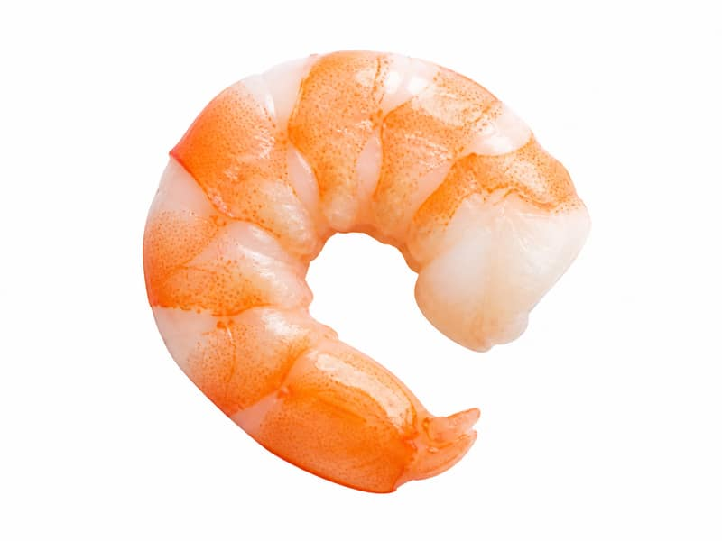

Mięsa i ryby
Krewetki gotowane
Krewetki gotowane: 24 g białka, 99 kcal, 0.2 g węglowodanów i 0.3 g tłuszczu na 100 g. Kategoria: Mięsa i ryby.
Kalorie99 kcalna 100 g
Białko / proteiny24 g
Węglowodany0.2 g
Tłuszcz0.3 g
Cena (szac.)~5,69 złza 100 g
Ceny zaktualizowano: maj 2026 (szacunek — ceny w popularnych supermarketach)
Porcja: porcja (100g)
| Kalorie | 99 kcal |
|---|---|
| Białko | 24 g |
| Węglowodany | 0.2 g |
| Tłuszcz | 0.3 g |
| Cena (szac.) | ~5,69 zł |
Szczegółowe składniki odżywcze na 100 g
| Wartość energetyczna (kalorie) | 99 kcal |
|---|---|
| Białko (proteiny) | 24 g |
| Węglowodany | 0.2 g |
| Tłuszcz | 0.3 g |
| Tłuszcze nasycone | 0.1 g |
| Tłuszcze nienasycone | 0.2 g |
| Witaminy i minerały | Jod, Selen, Żelazo |
| Współczynnik kcal / 1 g białka | 4.1 |
| Cena produktu (szac. za 100 g) | ~5,69 zł |
| Cena za 100 g białka (szac.) | ~23,71 zł |